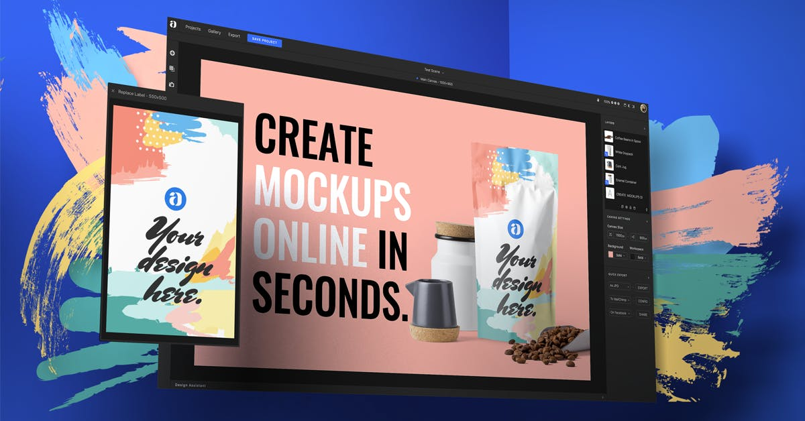
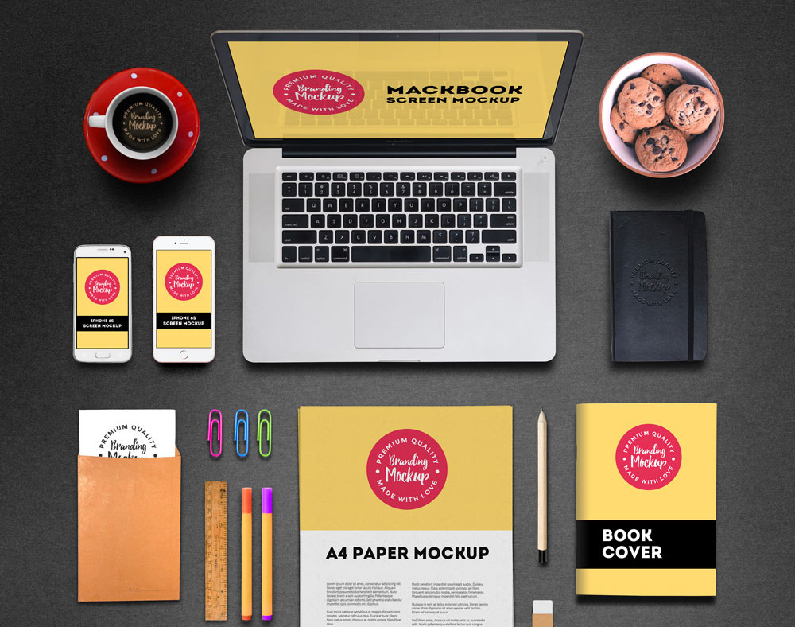
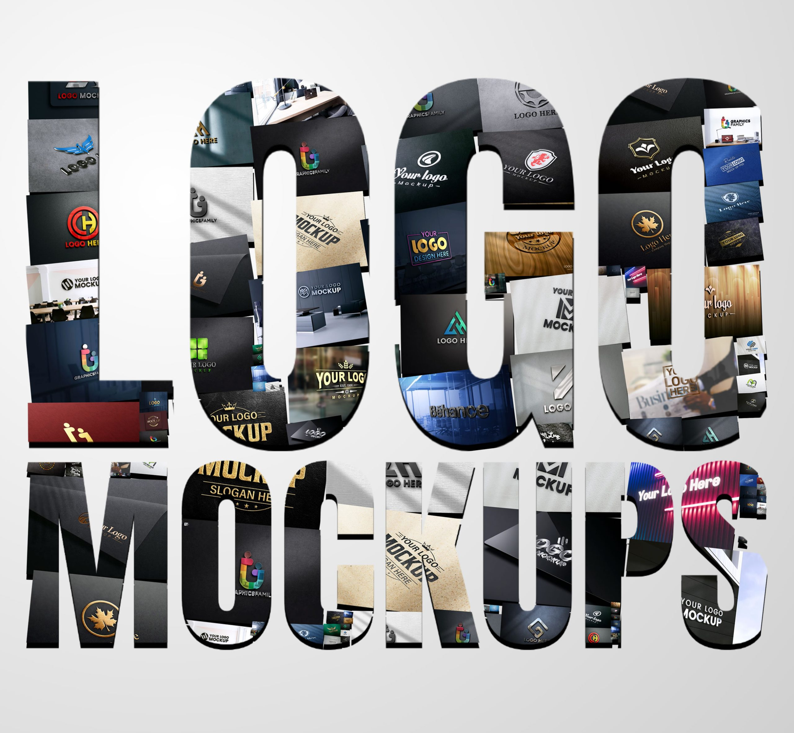

Welcome to Web and Graphics Design

Welcome to our website, a comprehensive resource and portfolio for web and graphics design. Explore our featured projects, latest updates, and navigate through the various sections to learn more about our work and services.



Stay updated with the latest trends and best practices in web design. We're here to inspire and educate the design community with our expertise and passion for creativity.